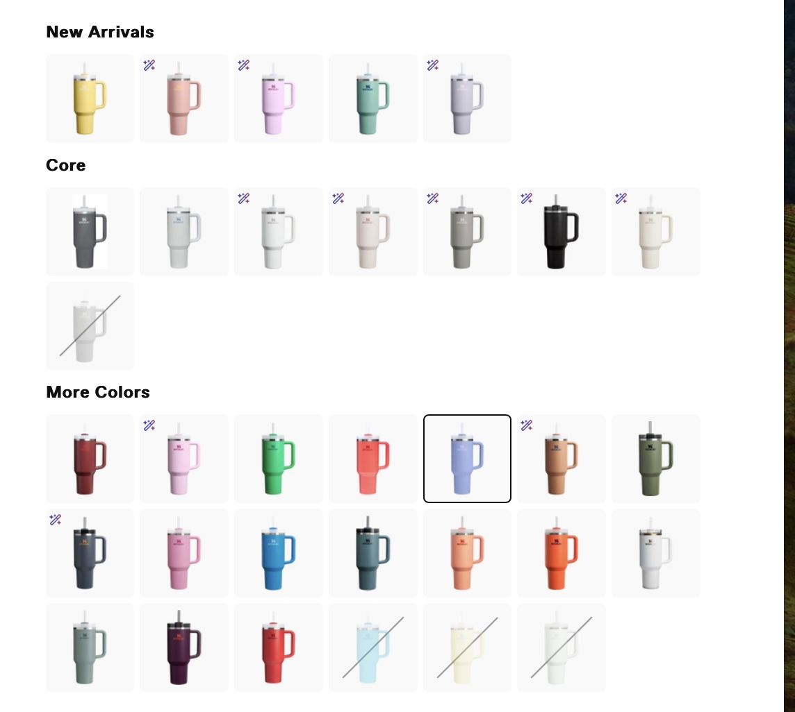

Stanley cups have how been a huge sensation for over a year. For some reason, people cannot stop purchasing them whatsoever. Whether that’s because of their reasonably set marketing strategies, or because of the psychological aspect. This is the time when you finally understand the fame of Stanley cups!
While scrolling through TikTok or other social media in order to purchase a specific item we subconsciously only pay attention to one thing- aesthetics. The item itself might not be unique, moreover, clearly overpriced. However, if it is merchandised in an appealing way- it will make it to your cart. And that is how Stanleys became so re-known. Through their platform one can vividly trace the brand identity: Minimalistic, Modern, Relevant. Just like people like it. The concept lingers through all of their content, allowing customers to feel closely-bonded with the certain type of assortment.

It goes into the second point why everyone is genuinely so obsessed with Stanley cups- reasonably built targeted ads. During the time when cups were so favored, pilates girl aesthetic was also admired. Pink matching sets, skincare routines, working out and being aware of your health and lifestyle. That’s when staying hydrated also hyped up. Suddenly, every girl was obsessed with always drinking enough water, which, required a capacious drinking bottle- Stanley.

The cups were portable, exquisite and, at first, authentic, just what these individuals were looking for. As the phenomenon rapidly spread around the globe and before long people were trapped in an endless cycle of Bandwagon Effect- an effect suggesting that people buy a product because “everyone else is,” often triggered by high-visibility promotion. As follows, it created the vision that ‘everybody’ had the caps when, in fact, only those who sought visual pleasure did. At that point, the bottles became regular, instead of one-of-a-kind and were severely overbought.
One more thing why people feel drawn to purchase Stanley is the variety of versions and colors the brand provides. While other thermos companies offer limited range of sizes or colors, Stanley has dozens of them.
Everyone can choose the one that fits their lifestyle, personality and heart. Doing even deeper, the company always develops new accessories to promote their cups, such as creating special form of ice or extra holders for keys and lipglosses to fasten on the handle of the cup.
The bottom line is, Stanley’s coverage has more to with the marketing strategies than with the quality of a product itself. Stanely’s are reasonably promoted in the masses through visual storytelling, keeping up with and adapting to new trends and enriching the functionality of the cups.